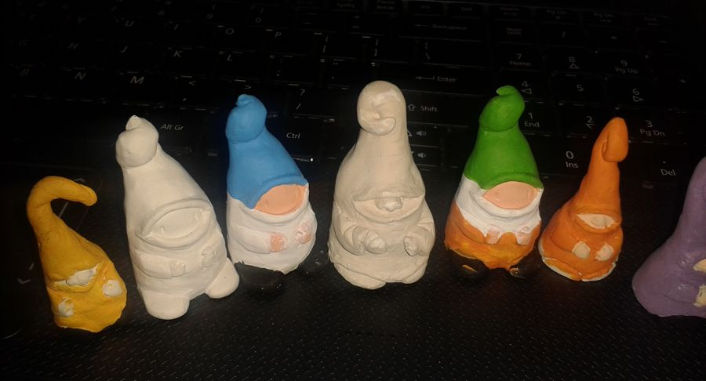
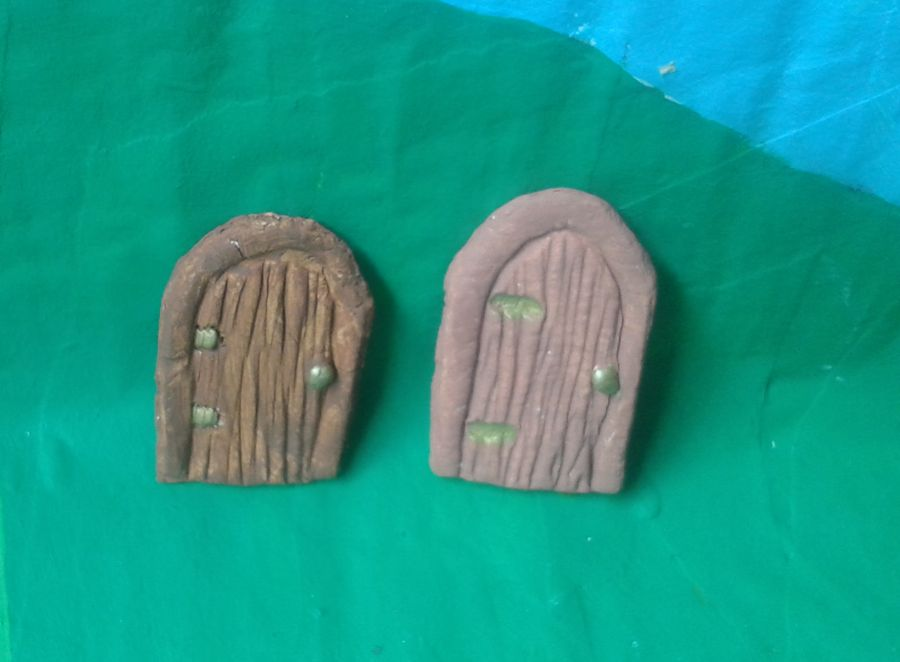
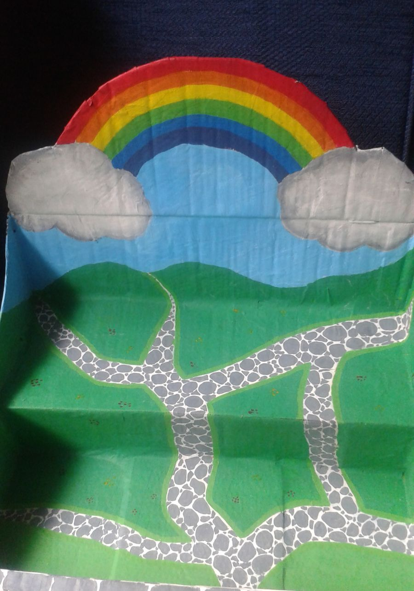
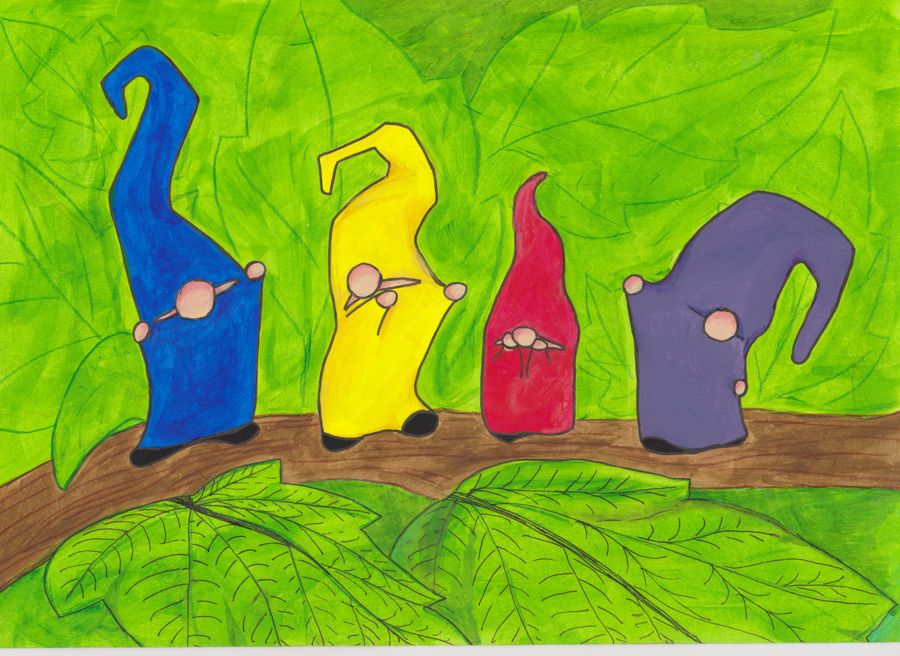
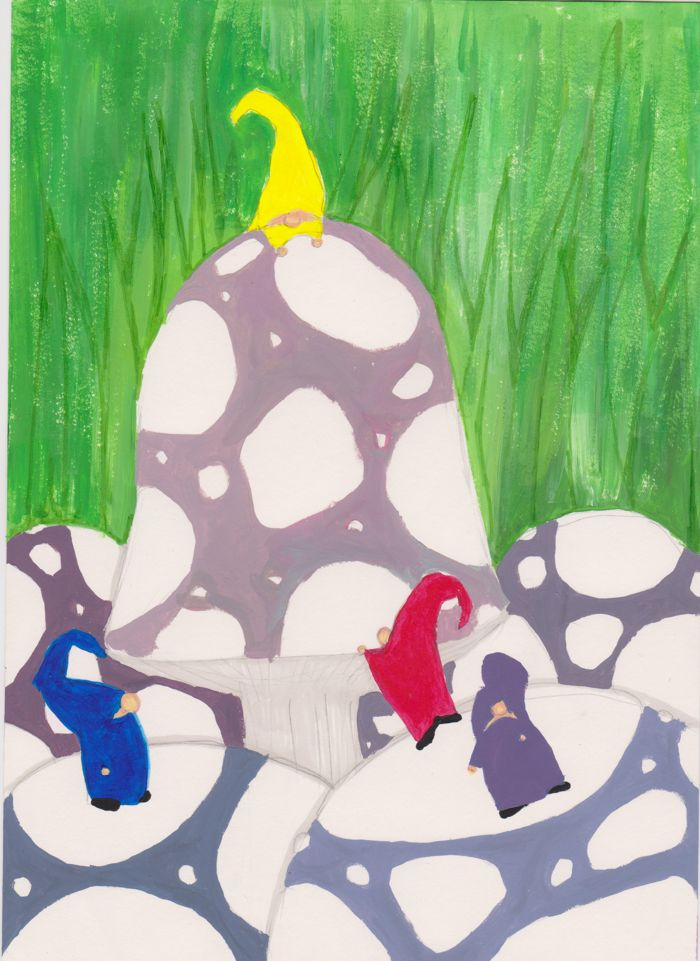

My Tiny World
things I made with my own two handsA small cabinet of pieces by Gisi Zimerman
Everything on this page I made myself. The first pieces come from 2015 and the Dublin pavement: the elves, the doors they knock on, the mushrooms they lean against. The 1:12 pieces I'm making now are still on the workbench, and they'll move onto the shelf as they're finished.
i. Made in Dublin, 2015




ii. Pegged up to dry
Drawings from the same year: marker, paint and ink. The marker ones are loud on purpose, like the signs on the pavement. The ink ones are quieter, and that's the side of the elves this site lives in.



iii. On the workbench
What I'm working on now: a village for the elves at 1:12, built around an oak. In Irish folklore the oak is a sacred tree, so it seemed the right place for them to live. These are the first sketches.


Status: sketches, then models. coming at 1:12
Every piece here is one of one. When something new comes off the bench, it goes on this shelf first.
Gisi